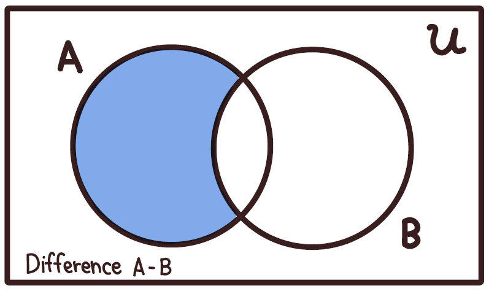
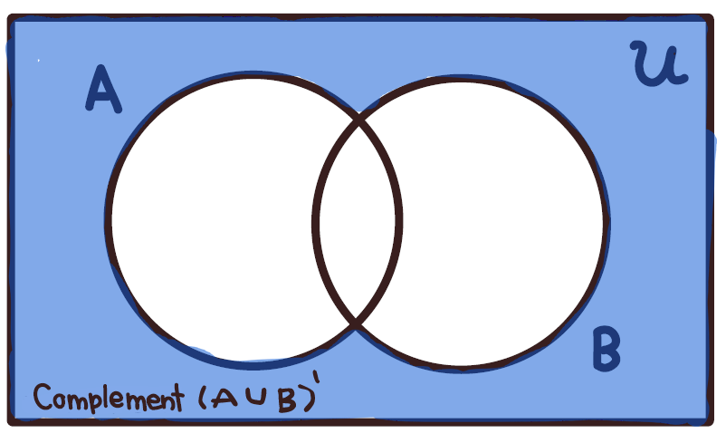
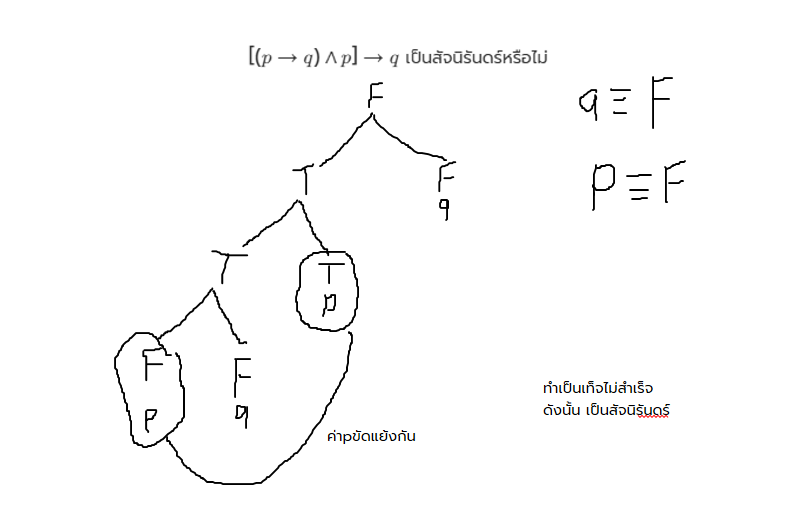

หน้าหลัก
หน้าหลัก
 กิจกรรม
กิจกรรม
Email: tolearnworkingonly@gmail.com
DISCORD: คลิกเพื่อเข้าDiscord Communityของเรา
ให้มองว่า เซต = กล่อง หรือ กลุ่ม ที่เอาไว้ใส่ของ ของที่อยู่ในกล่องเราจะเรียกว่า สมาชิก (Elements) เรามักตั้งชื่อกล่องด้วยภาษาอังกฤษตัวพิมพ์ใหญ่ เช่น A, B, C โดยใช้สัญลักษณ์{}แทนตัวกล่อง เช่น A = {1,2,3} อ่านว่า เซตAเท่ากับเซตที่มีสมาชิกประกอบด้วย1,2และ3
สมาชิกคือ:
$\in$ แปลว่า "เป็นสมาชิกของ" (อยู่ในกล่อง) เช่น $1 \in A$ (เลข 1 อยู่ในเซต $A$)
$\notin$ แปลว่า "ไม่เป็นสมาชิกของ" (ไม่อยู่ในกล่อง) เช่น $4 \notin A$ (เลข 4 ไม่อยู่ในเซต $A$)
การเขียนเซตแบ่งออกเป็น 2 รูปแบบหลัก ๆ คือ:
เซตจำกัด (Finite Set): เซตที่นับจำนวนสมาชิกได้ว่ามีกี่ตัว (ถึงจะเยอะเป็นล้านแต่นับจบ ก็ถือว่าจำกัด) เช่น {1,2,3} , {-5,-4,-3,...,4} , เซตของสระในภาษาอังกฤษ เป็นต้น
เซตอนันต์ (Infinite Set): เซตที่มีสมาชิกเยอะจนนับไม่ถ้วน เช่น เซตของดวงดาวในจักรวาล , เซตของจำนวนเต็มบวก $\{1, 2, 3, ...\}$ , $\{...-3,-2,-1\}$ , $\{...,-1,0,1,...\}$ เป็นต้น
เซตว่าง (Empty Set): กล่องเปล่าที่ไม่มีอะไรอยู่เลย สัญลักษณ์คือ $\emptyset$ หรือ {} เช่น $\{x \mid x < 0\}$ , เซตของเดือนในประเทศไทยที่ลงท้ายด้วยคน เป็นต้น
จำนวนสมาชิกของเซต: ใช้สัญลักษณ์ n(A) แทนจำนวนสมาชิกของเซตจำกัด A ถ้า A = {1, b, ขนมปัง} จะได้ว่า n(A) = 3 หากในเซตมีสมาชิกซ้ำกัน จะนับสมาชิกที่ซ้ำรวมเป็นตัวเดียว
ข้อควรระวัง!!: {$\emptyset$} ไม่ใช่เซตว่าง เนื่องจากมี$\emptyset$เป็นสมาชิกในเซต จึงถือว่าเป็นเซตจำกัด
ในการเขียนเซตจะต้องกำหนดเขตที่บ่งบอกถึงขอบเขตของสิ่งที่จะพิจารณา เรียกเซตกำหนดเขตนี้ว่า เอกภพสัมพัทธ์ (Relative Universe) ซึ่งมักเขียนแทนด้วย U
ℕ คือ เซต ของจำนวนนับ หรือ จำนวนเต็มบวก
ℤ คือ เซตของจำนวนเต็ม
ℝ คือ เซตของจำนวนจริง
เซตสองเซตจะเท่ากันก็ต่อเมื่อ เซตทั้งสองมีสมาชิกเหมือนกันทุกตัว โดยไม่สนว่าสมาชิกจะอยู่ในตำแหน่งเดียวกันหรือไม่หากมีสมาชิกเหมือนกันก็จะนับว่าเป็นเซตเท่ากันเช่นกัน ช่น ถ้า $A = \{1, 2\}$ และ $B = \{2, 1\}$ จะได้ว่า $A = B$
เซต A เป็นสับเซตของ B ก็ต่อเมื่อ สมาชิกทุกตัวของเซต A เป็นสมาชิกของ B เขียนแทนด้วยสัญลักษณ์ A⊂B หากมีสมาชิกของAที่ไม่เหมือนกับBจะถือว่าไม่เป็นสับเซตซึ่งเขียนแทนด้วยสัญลักษณ์ A⊂ที่มีเครื่องหมายขีดฆ่าB เช่น
A = {1,2} สามารถแยกตัวประกอบสับเซตได้เป็น {$\emptyset$},{1},{2},{1,2}
โดยมีสมบัติของสับเซตที่น่าสนใจคือเรียกเซตของสับเซตทั้งหมดของสับเซต A ว่า เพาเวอร์เซต (Power Set) ของเซต A เขียนแทนด้วย P(A)
ตัวอย่างเช่นA = {1,2} P(A) = {$\emptyset$,{1},{2},{1,2}} จำง่ายๆ P(A)={สมาชิกของสับเซตทั้งหมด}
แผนภาพเวนน์เป็นการแสดงเซตเป็นภาพ ซึ่งช่วยให้เห็นภาพความสัมพันธ์ระหว่างเซต และใช้การแก้ปัญหาเรื่องเซตได้ง่ายขึ้น
ตัวอย่าง เช่นกำหนดให้ $\mathcal{U}$={1,2,3,4,5} A={1,2,3,4} B={2,3,6}

ตัวอักษรภาษาอังกฤษในเซตแทนเป็นชื่อเซต
คือ การนำเซตตั้งแต่ 2 เซตขึ้นไปมาทำปฏิสัมพันธ์กันภายใต้เงื่อนไขหรือกฎเกณฑ์ทางคณิตศาสตร์ เพื่อสร้างให้เกิดเป็นเซตใหม่ขึ้นมา เปรียบเสมือนกับการที่เรานำตัวเลขมาบวก ลบ คูณ หรือหารกันในระบบจำนวนทั่วไป เพื่อช่วยในการจัดกลุ่ม วิเคราะห์ และหาความสัมพันธ์ของสมาชิกที่อยู่ภายในเซตเหล่านั้นได้อย่างเป็นระบบ
โดยมีตัวดำเนินการอยู่ทั้งหมด4ตัว ตามแต่ละหัวข้อด้านล่าง
การดำเนินการระหว่างเซตตั้งแต่ 2 เซตขึ้นไป โดยการนำสมาชิกทั้งหมดของทุกเซตมารวมเข้าด้วยกันเป็นเซตใหม่เพียงเซตเดียว ซึ่งถ้าหากมีสมาชิกตัวใดที่ซ้ำกันอยู่ เราจะเขียนแทนด้วยสมาชิกตัวนั้นเพียงครั้งเดียวเท่านั้นตามกฎเกณฑ์ของเซต นิยมเขียนแทนด้วยสัญลักษณ์คล้ายตัวยู $\cup$
ตัวอย่าง เช่นเนื่องจากเซตAและBมีสามาชิก2และ3เหมือนกันจึงเอามาเขียนแค่ตัวเดียว

การดำเนินการระหว่างเซตตั้งแต่ 2 เซตขึ้นไป โดยเป็นการเลือกเอาเฉพาะสมาชิกตัวที่ซ้ำกันหรือมีอยู่ร่วมกันในทุกเซตมารวมกันเพื่อสร้างเป็นเซตใหม่ ซึ่งหากไม่มีสมาชิกตัวใดที่มีค่าเหมือนกันหรือซ้ำกันเลย ผลลัพธ์ที่ได้จากการอินเตอร์เซกชันนั้นจะเป็นเซตว่าง นิยมเขียนแทนด้วยสัญลักษณ์คล้ายตัวยูคว่ำ $\cap$
ตัวอย่าง เช่น
การดำเนินการระหว่างเซตสองเซต โดยผลต่างของเซต $A$ และเซต $B$ (เขียนแทนด้วย $A - B$) คือเซตใหม่ที่สร้างขึ้นจากการเลือกเอาเฉพาะสมาชิกที่อยู่ในเซต $A$ แต่ต้องไม่อยู่ในเซต $B$ ซึ่งในทางกลับกัน หากเป็น $B - A$ ก็จะหมายถึงการเลือกเฉพาะสมาชิกที่อยู่ในเซต $B$ แต่ไม่อยู่ในเซต $A$ นั่นเอง เปรียบเสมือนการนำเซตตั้งต้นมาตั้งแล้วหักลบสมาชิกที่มีส่วนซ้ำกับอีกเซตหนึ่งทิ้งไป
ตัวอย่าง เช่น
การดำเนินการหาภายนอกของเซตที่สนใจ โดยคอมพลีเมนต์ของเซต $A$ (เขียนแทนด้วย $A'$ หรือ $A^c$) คือเซตใหม่ที่รวมสมาชิกทั้งหมดในเอกภพสัมพัทธ์ ($U$) แต่ไม่เอาสมาชิกที่อยู่ในเซต $A$ เปรียบเสมือนการสลับเงื่อนไขเพื่อเลือกเฉพาะ "สิ่งอื่น ๆ ทั้งหมดที่เหลืออยู่" ที่อยู่รอบนอกวงของเซตนั้น แต่ยังต้องอยู่ภายในขอบเขตของเอกภพสัมพัทธ์ที่กำหนดไว้
ตัวอย่าง เช่น
1. สูตรสำหรับ 2 เซต (กลุ่มข้อมูล 2 กลุ่ม)ใช้เมื่อโจทย์พูดถึงสิ่งของหรือกิจกรรม 2 อย่าง เช่น ชอบคณิตศาสตร์ ชอบภาษาอังกฤษ $$n(A \cup B) = n(A) + n(B) - n(A \cap B)$$
2. สูตรสำหรับ 3 เซต (กลุ่มข้อมูล 3 กลุ่ม) ใช้เมื่อโจทย์มีความซับซ้อนขึ้น มีกิจกรรมหรือสิ่งของ 3 อย่าง เช่น ฟุตบอล บาสเกตบอล วอลเลย์บอล (สำหรับผู้ใช้มือถือให้กดค้างตรงสูตรแล้วเลื่อนซ้าย) $$n(A \cup B \cup C) = n(A) + n(B) + n(C) - n(A \cap B) - n(A \cap C) - n(B \cap C) + n(A \cap B \cap C)$$
(สำหรับผู้ใช้มือถือให้กดค้างตรงสูตรแล้วเลื่อนซ้าย)
$$n(A \cup B) = n(A) + n(B) - n(A \cap B)$$ $$n(A \cup B) = 30 + 25 - 10$$ $$n(A \cup B) = 45 \text{ คน}$$
ดังนั้น มีคนที่ชอบเล่นเกมรวมทั้งหมด 45 คน โจทย์ถามหา คนที่ไม่ชอบเล่นเลย (อยู่รอบนอกวงกลม) เราจึงเอาจำนวนนักเรียนทั้งหมดตั้งแล้วลบด้วยคนที่ชอบเล่นเกม:
(สำหรับผู้ใช้มือถือให้กดค้างตรงสูตรแล้วเลื่อนซ้ายทั้ง2สมการ)
$$\text{ไม่ชอบเล่นทั้งสองเกม} = n(U) - n(A \cup B)$$ $$\text{ไม่ชอบเล่นทั้งสองเกม} = 50 - 45 = 5 \text{ คน}$$
ตอบมีนักเรียน 5 คนที่ไม่ชอบเล่นเกมทั้งสองนี้เลยจงหาว่ามีนักเรียนที่ชอบเรียนอย่างน้อยหนึ่งวิชา (นับรวมทุกคนที่อยู่ในวง) ทั้งหมดกี่คน?
วิธีคิดเมื่่อใช้สูตร:
จากโจทย์เราได้ตัวแปรดังนี้:
n(M) = 20
n(C) = 15
n(P) = 18
n(M ∩ C) = 7
n(M ∩ P) = 9
n(C ∩ P) = 6
n(M ∩ C ∩ P) = 3
แทนค่าลงในสูตร 3 เซตตรงๆ ได้เลย
(สำหรับผู้ใช้มือถือให้กดค้างตรงสูตรแล้วเลื่อนซ้าย) $$n(M \cup C \cup P) = 20 + 15 + 18 - 7 - 9 - 6 + 3$$ $$n(M \cup C \cup P) = 53 - 22 + 3$$ $$n(M \cup C \cup P) = 34 \text{ คน}$$
ประพจน์ (Proposition) คือ ประโยคบอกเล่าหรือปฏิเสธที่เราสามารถบอกได้ชัดเจนว่ามัน
"เป็นจริง (True - $T$)"หรือ"เป็นเท็จ(False - $F$)"อย่างใดอย่างหนึ่งเท่านั้น
เวลาเราเอาประพจน์หลายๆ อันมาต่อกัน เราจะใช้ตัวเชื่อม ให้จำ "จุดเด่น" ของแต่ละตัวไว้ | ชื่อตัวเชื่อม | สัญลักษณ์ | กฎเหล็ก (ท่องแค่นี้พอ!)
หากจำตารางนี้ได้โจทย์ทั้งหมดจะง่ายขึ้นแบบ300%
ตารางค่าความจริงของประพจน์
สมมูล คือ ประพจน์สองอันที่หน้าตาต่างกัน แต่ "มีค่าความจริงเหมือนกันทุกกรณี" มีทั้งหมด22ค่าสมมูล
รูปภาพแสดงค่าสมมูลทั้ง22ค่าสมมูล
โดยกำหนดให้:
p คือ ค่าความจริงตัวแรก , q คือ ค่าความจริงตัวที่2 , T คือ ค่าความจริงที่เป็นจริง และ F คือ ค่าความจริงที่เป็นเท็จ
คือรูปแบบของประพจน์ที่ "เป็นจริง ($T$) เสมอ ไม่ว่าสถานการณ์ใดๆ ก็ตาม" วิธีเช็กเมื่่อโจทย์มีตัวเชื่อมเป็น
หรือ ($\lor$) , ถ้า...แล้ว ($\rightarrow$) คือ การหาข้อขัดแย้ง หรือหาได้จากการเทียบตารางค่าความจริงของพจน์แต่ละตัว
$[(p \to q) \land p] \to q$ เป็นสัจนิรันดร์หรือไม่
คิดแบบวิธีหาข้อขัดแย้งกืก